The HorrorStudio Look plugin
The studio's look for any Godot 4.7 game, as nodes you drop into a scene and tune in the Inspector: the pseudo-realism preset, flickering bulbs, light through a window, wet floors and rain, blood, real mirrors, the character's skin, eyes and hair, a film grade and a camcorder's tape. It's in every Director project and every game the desk exports, and it goes into a project you build by hand the same way.
1What it is
One add-on, addons/horrorstudio_look/, with nothing to build. Every effect is a node (a @tool
script with an icon): Add Child Node and type HS to see them all. They preview in the
editor where they can (the rain falls, the bulb flickers, the floor shines) and save only their numbers. What they make
inside themselves is never saved, and a node that changes a mesh's material puts the mesh's own back before every save.
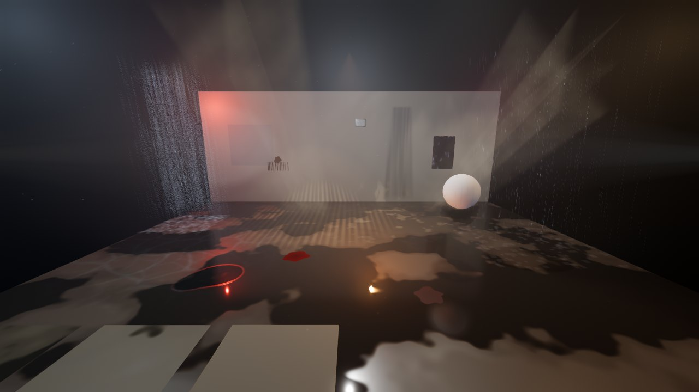
2Putting it in a project
A new project with it: python tools/godot_byhand.py new ~/Games/MyGame. A project you have:
python tools/godot_byhand.py install ~/Games/MyGame (again after a pull: it's a copy). Or by hand:
- Copy
GodotPlugins/HorrorStudioLook/addons/horrorstudio_lookinto the project asaddons/horrorstudio_look(the name kept). - Copy
GodotPlugins/HumanShadersinto the project's root asHumanShaders. The skin and the eyes need its textures. - Project → Project Settings → Plugins: tick HorrorStudio Look. The first time, it writes the balanced look's settings into the project (TAA, the shadow atlas, occlusion culling). Project → Tools → HorrorStudio: apply the balanced project settings writes them again.
3The look
HSLookEnvironment is a WorldEnvironment that wears a preset: balanced (the default:
SSR, SSAO, glow, a thin haze, AgX), realism (all of it overplayed for small, baked-lit rooms) or plain.
It's meant for editing: in a running game it steps aside for the game's own environment. In a game you build by hand,
untick Editor Only and it's the game's. presets/look_balanced.tscn drops in the environment, a tape and a grade together.
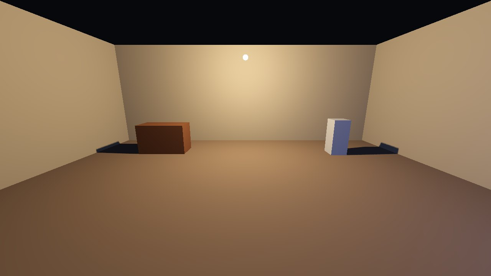
plain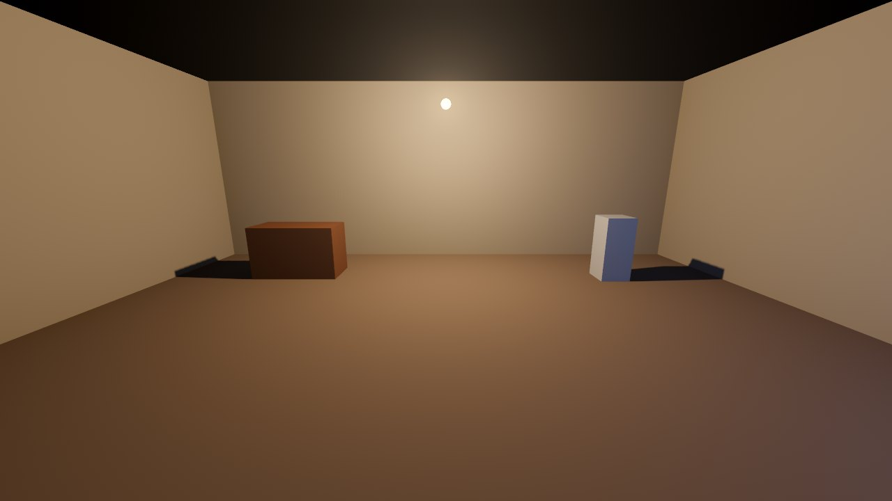
realism4Lights
| HSFlickerLight, HSFlickerSpot | An omni or a spot that flickers: mode fluorescent, dying, candle, pulse, custom
(letters, a dark to z double, m full), wobble; amount, interval, rate.
on_mains puts it in the group hs_mains, which a power cut switches off. |
| HSPatternLight | A spot throwing caustics, leaves, blinds or clouds (pattern, feature_m, speed). |
| HSLightShaft | A window's beam: put it in the opening, forward into the room, and fit its orange outline to the glass. Crisp at the glass, soft where it lands. |
| HSHeadlightSweep | A car passing outside the window every so often, the frame's shadow sliding across the ceiling (fire() one now). |
| HSLightZone | A room's box that owns the lights inside it. They light only what's in it, their reach fitted, off while the room's out of view. In the game each light's glass (what glows beside it: a tube, a bulb) goes out, dims and flickers with it. |
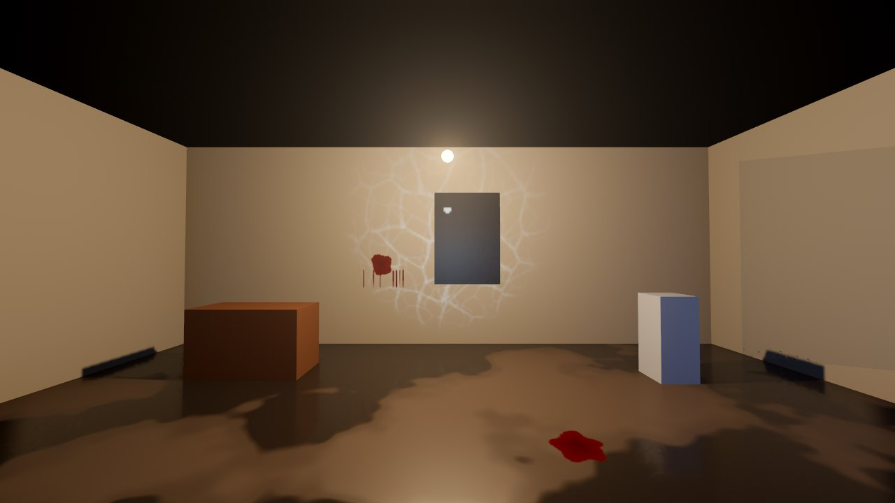
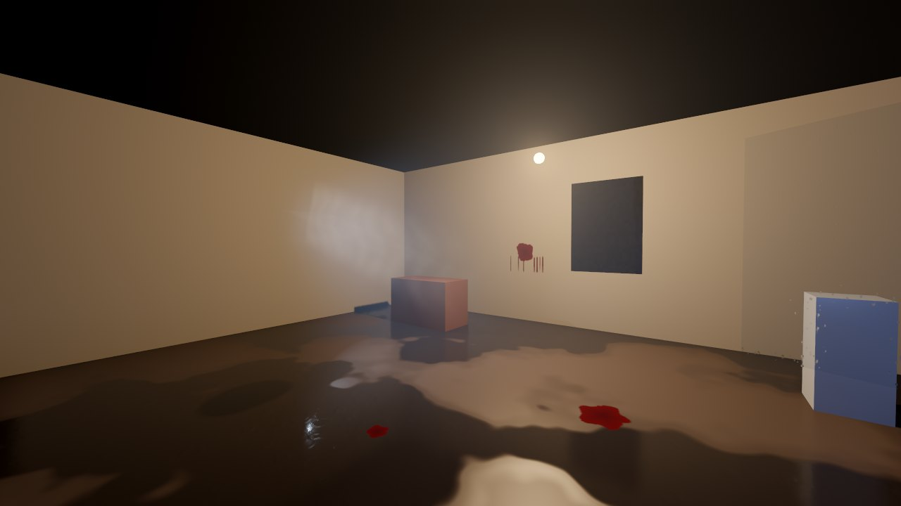
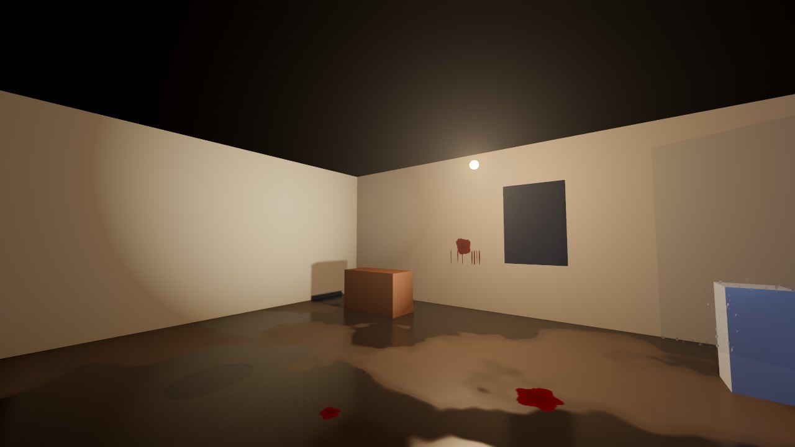
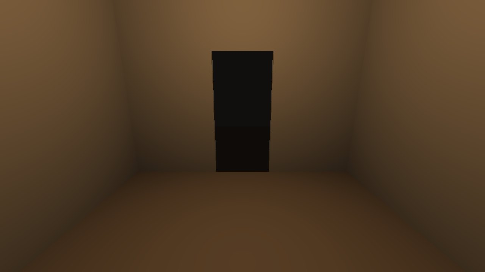
5The air: fog, a beam in it, dust
How thick the air is, set by one number, and the lights' beams in it. A flashlight in the woods at night is a beam in the fog; a dusty room shows motes where the light falls. (docs/research/eye_candy.md has why, measured.)
| HSAtmosphere | One a level. fog is the fog level: 0 clear air, 0.25 the look's own haze, 0.5 about
80 m to see through, 0.75 about 35 m, 1 about 20 m. mist is ground mist thinning with height (ground,
mist_height). wind drifts it, noise breaks it into wisps and pockets, and dust
is motes seen in the light. Or pick a preset: clear, clean_room, dusty_room, hazy_night, woods_mist, fog or
thick_fog. From a script, $Air.fog_to(0.7, 3.0) rolls the fog in over three seconds. |
| HSBeam | Under a SpotLight3D: its beam in the air, as bright as the air is thick. It follows the light
every frame, so a battery running down or a flicker shows in the air. cookie = flashlight gives the light a
flashlight's beam, a hot core, a faint ring and a dim spill, on the walls and in the air alike. |
| HSAirZone | A box where the air is different: a dusty stairwell, a damp cellar. While you're inside, the
air eases to its fog, dust and mist over seconds, and back when you leave. |
| HSDust | Motes round the eye, seen only where light reaches them, the way your eye sees dust in a beam: sharp specks of many sizes, flakes that flash as they tumble, threads of lint, drifting on slow eddies of the air. In your flashlight's beam, round a lamp, never by moonlight, and only against the dark: over a lit wall they fade, as dust does. An HSAtmosphere keeps one itself. |
The presets flashlight and flashlight_led are a SpotLight3D with its beam: put one under your
camera, a little right of it and down. lamp_beam is a lamp's cone in the air. The starter kit's flashlight has
its beam already.
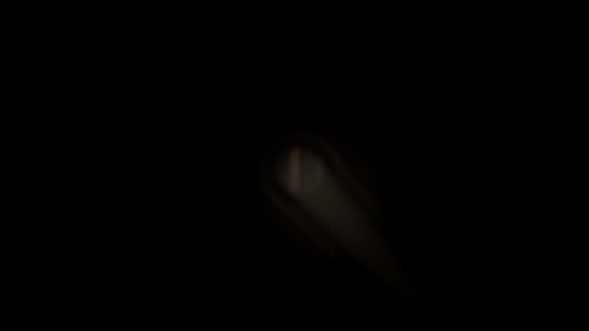
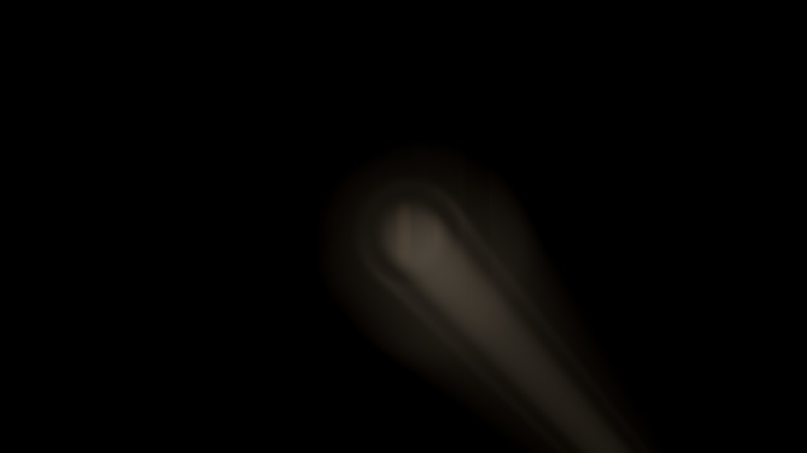
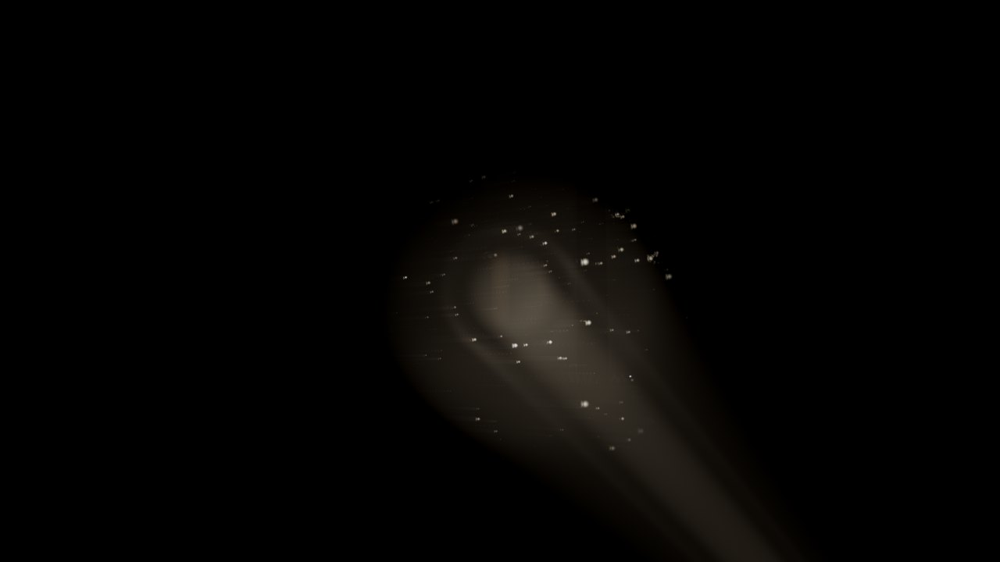
woods_mist: mist, and dust glinting in the beam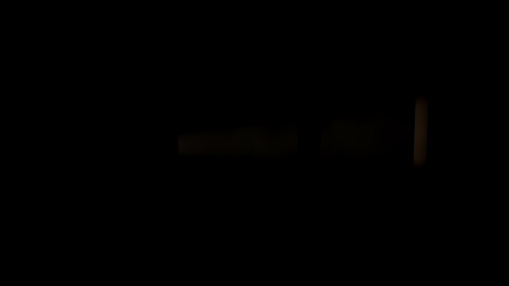
6Water, weather, blood
| HSWetSurface | Under a mesh: it's wet, with pools in a noise across it and rain's rings on them (wetness, puddles, ripples). |
| HSPuddle | A puddle decal under it. |
| HSRainBox | Rain in a box, lit by every light that reaches it (the flashlight's beam full of rain), splashes where it lands; follow_camera outdoors. |
| HSWindowPane | Under a pane's mesh: glass with drops running down it, bending what's behind. |
| HSWallLeak | On a wall: water coming in, a wet band running down in rivulets, drops falling to the floor. |
| HSBloodSplat | Blood on the surface its +Y points out of: a ragged pool, flung drops, drips; dry dulls it. |

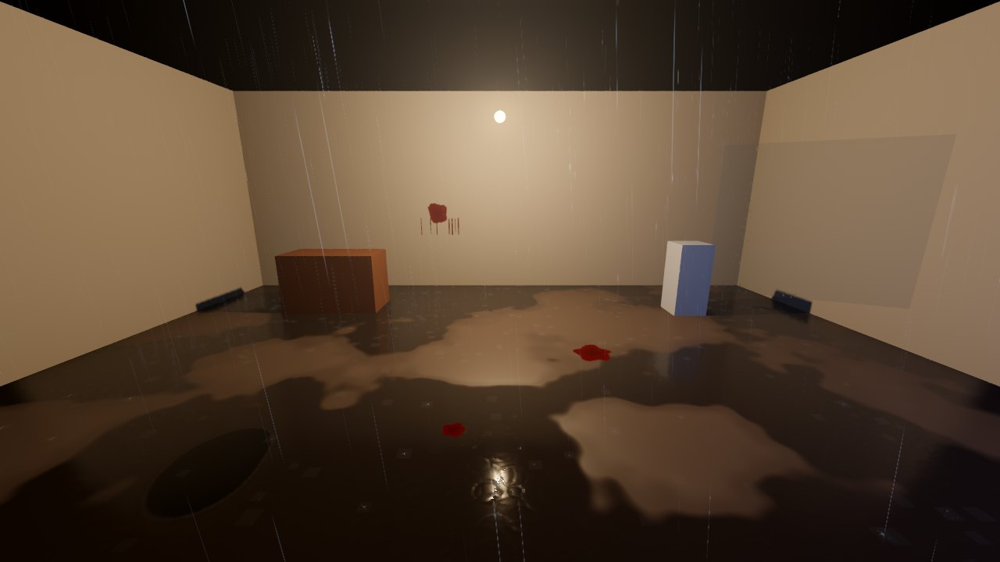
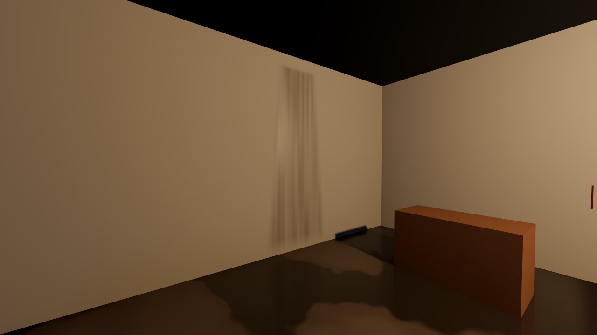
7Mirrors
HSMirrorSurface under a mesh makes it a real mirror in the game: the camera reflected through the glass
into a view of its own, drawn while the glass is in sight (resolution).
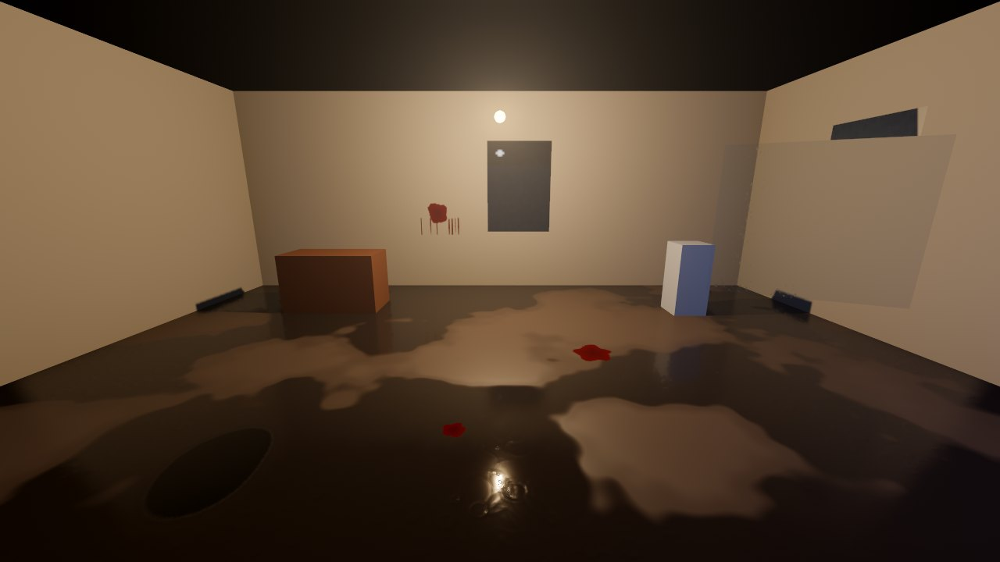
8People
HSCharacterLook under a character (a Character Studio export, or any model whose meshes are named skin, eye, hair) puts the studio's skin, eyes and hair on it when the game runs:
- the skin: HumanShaders' skin with the pores and furrows at their true size (
skin_detailauto, young, natural, adult, old), warm light from under it round the eyes, the nose, the mouth and the ears (skin_depth,ear_glow), and wet:wetness,sweat(beads),drips,oil; - the eyes: the refracting cornea, the wet layer, the tear line, an idle blink;
- the hair: the salon's bake worn MetaHuman's way (two highlights, light through it from behind);
- animal ears that flop: the Character Studio's animal ears (Accessories) come with a chain of bones each, and
they swing as she moves and settle back (
jiggleon,jiggle_amount0 still to 2 very floppy). It is HSJiggle, which you can also put under any character yourself: it springs every chain of bones namedjiggle_<name>_0,_1…jiggle_<name>_tip, so a tail of your own works the same way.
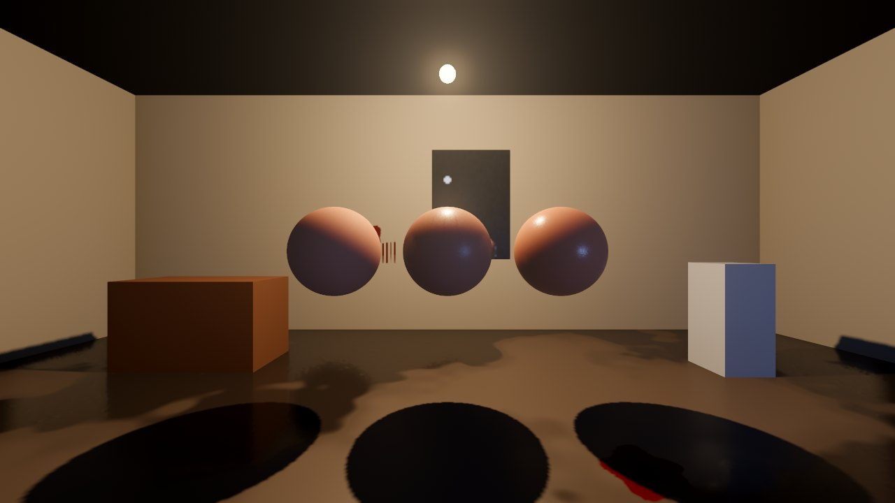
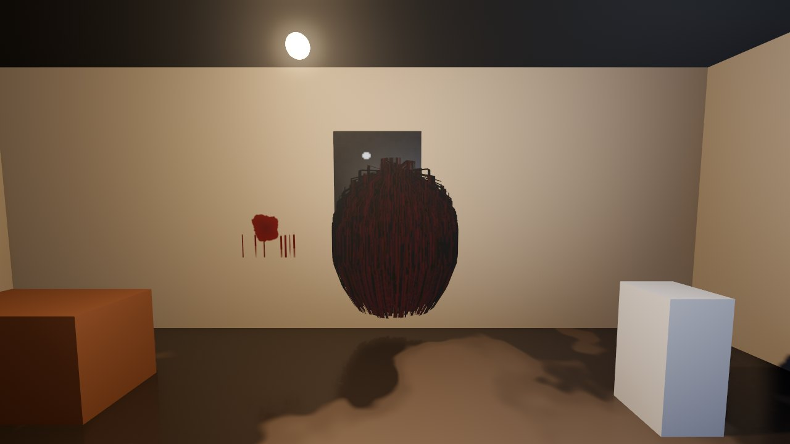
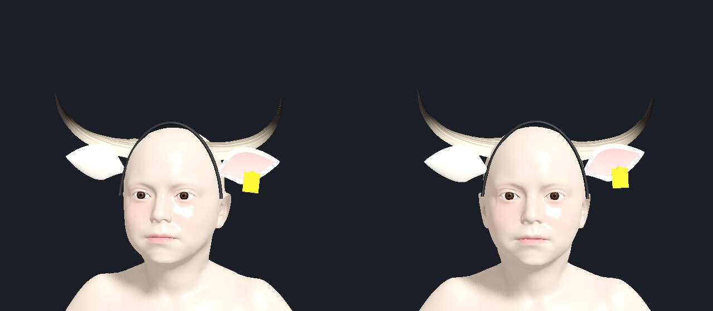
It needs HumanShaders/ at the project's root. In a shipped game, keep the character's .glb in the
export (*.glb in the preset's non-resource filters): the look reads its records from it.
Creature skins: a skin that isn't skin
For monsters. On the same HSCharacterLook, open Creature skin and pick one (or drag a ready-made
one under the character: presets/creature_chrome.tscn, creature_pearl, creature_greasy…):
chrome | polished silver: bright under any lamp, the room mirrored in it |
mirror | a perfect mirror: it shows the room and nothing else, so it is black where the room is black |
pearl | a pearl's white, pinks and greens turning as she moves |
greasy | her own skin under a film of grease in smears, dirt in every crease |
slime | a wet green gel over her, the light coming through it |
oil | black and wet, an oil slick's colours along its edges |
porcelain | a doll's glazed white with hairline cracks |
ember | burnt black, its cracks glowing and breathing (the only one that lights itself) |
stone | a statue: grey, matt, cracked here and there |
scales | a reptile's small glossy scales in her own colour |
wax | pale wax, the light glowing through its edges |
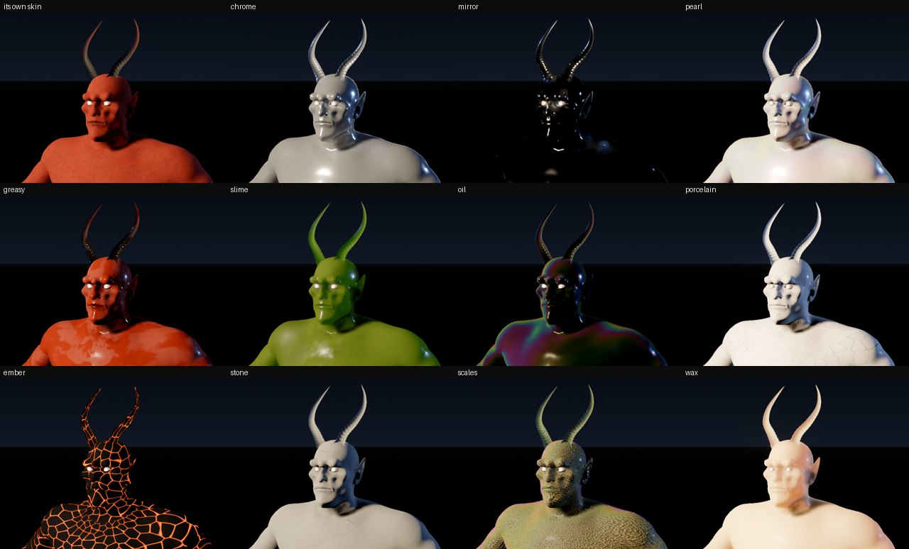
Amount runs from her own skin's colour (0) to the look (1): animate it for a skin that turns. Tint recolours a look (chrome with a gold tint is gold; leave it see-through for the look's own colour). Extend puts it on her horns and ears too. Her eyes, teeth, hair and clothes are never touched. The looks keep what her skin had: its colour (as much as the look leaves), its pores and wrinkles, its shading in the creases.
They have no light of their own: with the lamps out a chrome creature is as dark as the room, and a flashlight on it
flares. From a script: HSCreatureSkin.wear($Demon, "chrome"), HSCreatureSkin.clear($Demon) to take it off,
$Demon/HSCharacterLook.set_creature("ember") and set_creature_amount(0.4) while the game runs.
The cloak: invisible
The twelfth creature skin, cloak. She shows what's behind her, bent through her shape in stepped shells,
on everything she has: skin, eyes, hair, clothes. Standing still she's nearly gone; moving, she ripples. She has no
light of her own, and a lamp only glints on her.
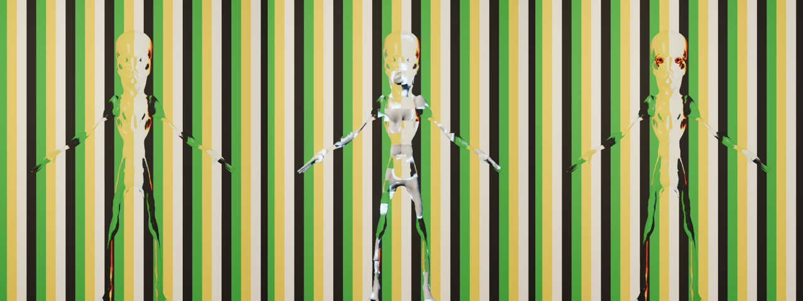
For a cloak that comes and goes, put an HSCloak under her (presets/cloak.tscn):
Cloaked is how she starts, Seconds how long it takes, Eyes Show leaves her eyes to see,
Shadow lets her go on casting one (nobody there, and a shadow on the wall). From a script:
$Her/HSCloak.reveal(0.15), .cloak(), .flicker(0.6) (it breaks up for a moment: with
the weapons plugin's hit react beside it, every hit does). Its fire() does what On Fire says, so a cue
or a scare area can aim at it.
It reads the picture behind her. See-through things behind her (a beam in the fog, smoke, rain on a pane) aren't in that picture, so in fog she shows as a hole.
Creepy eyes
For a Character Studio character's eyes. On her HSCharacterLook, open Creepy eyes
and pick one (or drag presets/eyes_glow.tscn, eyes_black, eyes_hearts… under her).
Eye Fx Color changes a look's colour (see-through: its own), Eye Fx Side does one eye only.
glow | the iris lit from inside, in any colour: two points in the dark |
black | the whole eye black and wet |
void | black, with a point of light in the middle |
white | no iris, no pupil: the whole eye a pale lamp |
blind | clouded over, milky |
bloodshot | the white reddened, veins toward the corners, the pupil wide |
spiral | a spiral turning in place of the iris |
hearts, star | a heart (throbbing) or a star in place of the pupil |
slit, cross | a serpent's upright pupil; a cross |
dilated, pinprick | the pupil blown wide, or shrunk to a point |
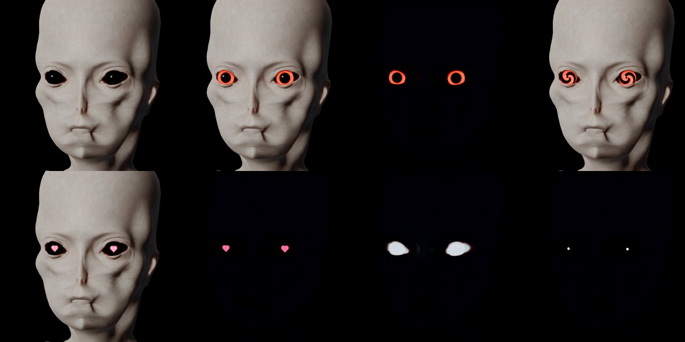
glow lit and in the dark, spiral; hearts lit and in the dark, white and void in the dark.From a script: HSEyeFx.wear($Her, "glow", {"color": Color.GREEN}), HSEyeFx.set_amount($Her, 0.5)
(coming on), HSEyeFx.clear($Her). Eyes that aren't the Studio's (a plain ball named eye) get only the glow,
the black, the void and the white.
Looks, switched: by a quest, an event, or by hand
When she should change during the game, don't use the rows above: put an HSLookSwitch
under her instead (presets/look_switch.tscn). It keeps a list of looks (files: a skin and a pair of
eyes each, default for either) and turns her from one to another:
- a look's Needs (the starter Story's words:
task:dinner, a fact,!for not): she wears it while they hold; - the starter kit's event areas and cues: Look Of and Her Look; or any signal wired to the switch's
fire(On Fire says which look); - a script:
$Her/Looks.set_look("angry"),.default(),.next(); - by hand: F8 in the running game (debug builds only).
You make the looks in the look viewer: Project → Tools → HorrorStudio: look viewer.
It shows a character from your project with every skin and eye look to toggle, their colours, Default, a lamp
to turn off, stripes to put behind her for the cloak, and Save as a look
(looks/<name>.tres). Tutorial v2, §30 walks through all of it.
9The grade and the tape
HSGrade is a film grade over the picture: preset cinema, teal-orange, cold, sodium, bleach, noir,
warm or none, then each number (lift, gamma, gain, warmth, saturation, contrast, fade, vignette, grain, aberration).
HSTape is UltraVHS, a camcorder's tape over it: camcorder, camhybrid, worn, nightmare or off, and a strength.
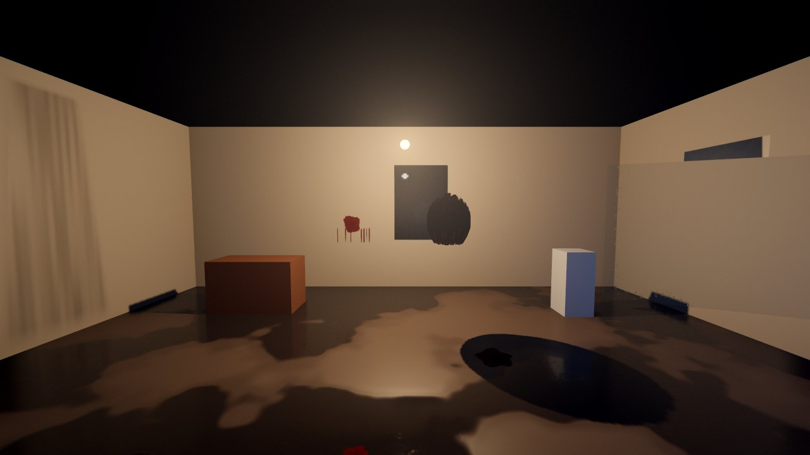
10Made props
The prop generator's props (tools/propgen.py) carry what glows and burns in them.
HSPropFX switches each on (glow, a candle's flame and its flickering light, smoke, steam, wax) and
HSLiquidFill keeps a bottle's liquid level and sloshing. A made prop's .tscn has both already.
11The presets
addons/horrorstudio_look/presets/ holds 80 ready-made nodes. Drag one from the FileSystem dock into the level and move it:
| Lights | candle, dying_bulb, desk_lamp_dying, fluorescent_tube, faulty_neon, alarm_pulse |
| Rooms | room_bulb, room_lamp, room_candle, room_dying, room_fluorescent, room_night (light zones with their lights) |
| Light's shape | caustics_light, blinds_light, leaves_light, clouds_light, window_shaft, window_sun, headlight_sweep |
| The air | air_clean_room, air_dusty_room, air_hazy_night, air_woods_mist, air_fog, air_thick_fog, air_zone_dusty, dust, flashlight, flashlight_led, lamp_beam |
| Water | rain, downpour, wet_floor, wet_floor_raining, damp_floor, puddle, window_pane, wall_leak |
| Blood | blood_pool, blood_wall, blood_dried |
| People | character_look, character_sweating |
| Creature skins | creature_chrome, creature_mirror, creature_pearl, creature_greasy, creature_slime, creature_oil, creature_porcelain, creature_ember, creature_stone, creature_scales, creature_wax (each under a character), creature_cloak |
| Eyes | eyes_glow, eyes_black, eyes_void, eyes_white, eyes_blind, eyes_bloodshot, eyes_spiral, eyes_hearts, eyes_star, eyes_slit, eyes_cross, eyes_dilated, eyes_pinprick |
| Looks that change | cloak (it comes and goes), look_switch (her looks, switched) |
| The finish | look_balanced, look_environment, grade_cinema, grade_cold, grade_noir, tape_camhybrid, tape_worn, mirror |
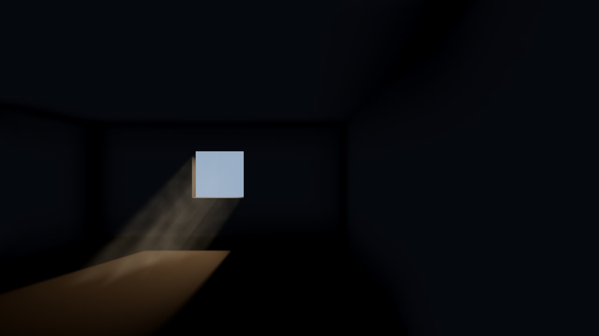
window_sun: the beam from the glass to the floor.12In your own scripts
Every piece is also a class you call from GDScript, without the nodes:
HSLook.apply(get_viewport(), $WorldEnvironment.environment, "balanced")
HSWet.wet($Floor, {"wetness": 0.8, "puddles": 0.5, "ripples": 1.0})
HSBlood.splat(self, hit.position, hit.normal, 0.8, 7)
add_child(HSRain.make(Vector3(12, 6, 12), 4000, 0.8))
HSMirror.attach($Bathroom/Mirror, 0, get_viewport().get_camera_3d(), 512)
$Air.fog_to(0.75, 4.0) # the fog rolls in (an HSAtmosphere)
$Flashlight.light_projector = HSAir.cookie("flashlight")
HSSkin.wear($Mari, {"sweat": 0.6}, "res://exports/characters/mari/mari.glb")
HSCreatureSkin.wear($Demon, "chrome", {"extend": true}) # a creature skin; HSCreatureSkin.clear($Demon) takes it off
The full list, with what each takes: GodotPlugins/HorrorStudioLook/README.md, and the numbers behind them in the studio's docs/GODOT_LOOK.md.
13Good to know
- Forward is -Z, into the room, for every node that faces a way (a shaft, a sweep, a pane).
- Render layers are shared out: 1 is everything by default, 2 to 10 the light zones, 11 to 19 the mirrors, 20 the hidden. If you use layers yourself, take others.
- MSAA switches off the screen-space reflections (the wet floors' shine). Keep TAA, as the balanced settings do.
- A node saves only its numbers, so a scene stays small and a pull of the studio updates every effect in it.